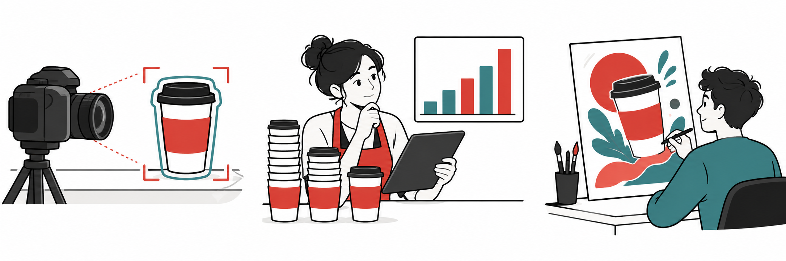

PPT 3–7
有甚麼證據？
會翻譯、寫文案或完成多步工作，都要看清楚能力與證據的範圍。

做完一份 PPT，就證明它具備 AGI 嗎？
單一任務成功，還不足以證明 AGI。
ANI／AGI 看能力範圍與表現，Agent 看如何完成任務。能完成多步任務，仍未證明它能在廣泛陌生領域可靠地學習與轉用。Agent不應排成ANI與AGI之間的一級。
| 產品 | 任務例子與界線 |
|---|---|
| ChatGPT Work | 整理提供的資料、製作文件，受可用工具與權限限制。 |
| Google Antigravity | 代理工作平台，可用Gemini等模型，與Gemini聊天應用要分清。 |
| Tencent WorkBuddy | 本地文件與辦公工作代理，表現取決於模型及工作環境。 |
A、B、C之中，哪一個才是 AI？
虛構商店情境。先寫分類和理由，再核對答案。
A：優惠券
只按固定規則：購物滿$500就發優惠券。
B：回購預測
模型從過往訂單學習，預測哪些顧客可能再次購買。
C：自動電郵
每天自動發電郵，但沒說收件人及內容如何決定。
PPT 9
RCTC：把要求說清楚
角色不是資格，要求不是保證。不必每次填滿四項，重點是這次任務需要哪些資訊。
| 部分 | 用途 |
|---|---|
| Role 角色 | 從甚麼工作角度回答 |
| Context 背景 | 情境、對象、用途與已知資料 |
| Task 任務 | 要做甚麼、交甚麼 |
| Constraints 限制 | 要遵守及核對的字數、語氣、內容與格式 |
這句要求主要有甚麼用途？
PPT 10–11
同一任務，兩種要求
觀察它詢問了甚麼，或自行補了甚麼。短版與完整版各用一個新對話。
短版
RCTC 完整版
標題字數檢查
三個標題分三行貼上。只輔助計算正文中文字，編號與標點不計；是否新增優惠或功效仍需你核對。
PPT 12–14
只改一項要求，再追問
先改語氣，其餘要求不變。保留你的第一個結果，再在同一對話追問一次。
第一步
自己的 prompt 與檢查判準
第二步
兩種追問，擇一使用
沒有發現違反，可用修改語氣，或如實記「未發現違反」。
PPT 15
留下操作與理由
把要求說清楚，是合作的起點。結果是否符合要求，仍要核對。
個人紀錄完整度
這裏只核對有沒有填寫，不判定你是否學會。未完成可照實下載，並記下原因。
只用虛構資料。紀錄保留在自己的瀏覽器，不會自動傳給老師；下載後依課堂指定方式交檔。
概念與產品來源
- AGI研究框架：能力廣度、表現與自主性分開討論，並非唯一共識。
- ChatGPT Work 官方說明
- Google Antigravity 官方說明／可用模型
- Tencent WorkBuddy 官方說明
- OECD AI定義解說
依本版PPT來源整理，產品版本與帳戶條件仍需課前確認。這些功能介紹不足以證明已達AGI。
可複製的學習紀錄
1 / 5